Experimento 1: energia single-point
Neste experimento você faz cálculos de energia de ponto único (single point) e analisa energias, cargas, dipolos e orbitais. A base teórica está em Orbitais moleculares e SCF.
Exercício 3: propriedades e reatividade do formaldeído e do eteno
Vamos comparar propriedades obtidas por cálculos single-point do formaldeído e do eteno: energia, momento de dipolo, cargas atômicas parciais, ordem de ligação e orbitais moleculares.
- Tabele as propriedades do formaldeído, do eteno e do ácido clorídrico (cargas atômicas, dipolo, energia total e ordem de ligação). Faça os mapas de potencial eletrostático e relacione-os com essas propriedades.
- Quais são os orbitais HOMO, HOMO-1 e LUMO das moléculas? Faça as superfícies e um diagrama qualitativo de energia.
- Relacione as superfícies dos orbitais HOMO/LUMO com os coeficientes orbitais.
- O que você conclui sobre a regioquímica desses compostos numa reação com o eletrófilo HCl?
A seguir há um roteiro para o formaldeído. Faça o mesmo para o eteno e responda às questões.
Criando o input do formaldeído
Desenhe o formaldeído com os passos do GABEDIT e ajuste os comprimentos de ligação para os valores experimentais. O NIST Chemistry WebBook traz dados experimentais desta e de muitas outras moléculas.
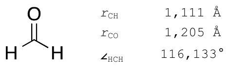
Crie o input para um cálculo single point com uma função de base do tipo Pople, a 6-31G. Os outros parâmetros não precisam ser alterados. O input deve ficar parecido com este:
# ================================================================
# Orca input file made in Gabedit
# ================================================================
! TightSCF HF
! PrintBasis 6-31G
%output
print[p_mos] 1
end #output
* xyz 0 1
C 0.009039 -0.030722 -0.001920
O 1.173985 -0.014066 0.305728
H -0.509612 -0.971078 -0.286619
H -0.606982 0.893697 -0.018872
*
%geom Constraints
{C 0 C}
{C 1 C}
{C 2 C}
{C 3 C}
end #Constraints
invertConstraints true
end #geomSobre as partes do input ainda não vistas:
- As linhas 1 a 3, começando com
#, são o título do projeto. Altere se quiser, mantendo o#. PrintBasisfaz com que todos os coeficientes dos orbitais sejam impressos na saída.- O bloco
%output…endpede ao ORCA mais informações na saída (aqui, as necessárias para montar os orbitais moleculares), que o GABEDIT usa depois. - O bloco
%geom Constraints…enddefine restrições durante o cálculo, por exemplo otimizar a molécula mantendo uma ligação ou um ângulo fixo. O GABEDIT costuma inseri-lo, mas ele não é necessário aqui e pode atrapalhar uma otimização: se aparecer, apague-o. Ele será usado mais adiante.
Rodando o cálculo
Clique no ícone de executar. Na janela que abre, escolha a pasta do cálculo em Folder e dê um nome ao arquivo no campo onde está escrito NoName. Clique em OK.
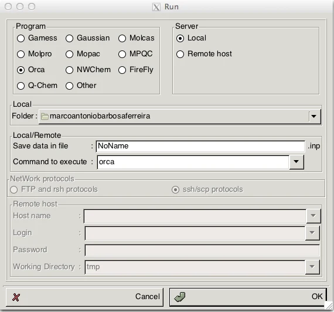
Clique na aba [nome do arquivo].out para ver a saída. Os ícones ao lado ajudam a navegar; Update/end mostra a última linha do arquivo naquele momento.
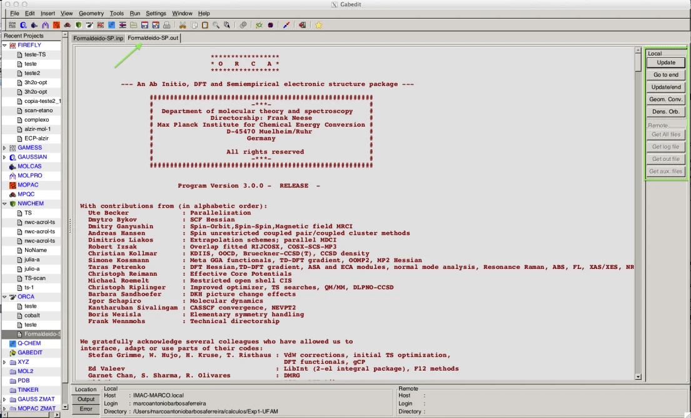
O cálculo leva poucos segundos. Ao final, procure sempre as duas últimas linhas, que dizem se o cálculo terminou normalmente e quanto tempo levou:
****ORCA TERMINATED NORMALLY****
TOTAL RUN TIME: 0 days 0 hours 0 minutes 11 seconds 352 msecHá dois tipos de erro num cálculo:
- De sintaxe: o programa confere o input e avisa se encontrar problemas. Por exemplo, apague o asterisco que fecha as coordenadas e rode
de novo com outro nome. A última linha será:
O programa não dá a solução, mas indica que o final das coordenadas cartesianas está errado.
Error: 'END' expected in COORDS/XYZ - De cálculo: dificuldades que o programa encontra ao fazer o cálculo.
Confira também se o ciclo SCF convergiu (veja Orbitais moleculares e SCF). Com a opção TightSCF, se tudo der certo, aparece a mensagem de sucesso no fim do bloco:
--------------
SCF ITERATIONS
--------------
ITER Energy Delta-E Max-DP RMS-DP [F,P] Damp
*** Starting incremental Fock matrix formation ***
0 -113.2078036340 0.000000000000 0.04812624 0.00323957 0.0953923 0.7000
1 -113.2112903068 -0.003486672775 0.03889590 0.00262768 0.0685840 0.7000
***Turning on DIIS***
2 -113.2139006030 -0.002610296187 0.09690121 0.00656073 0.0491587 0.0000
3 -113.2255267247 -0.011626121665 0.01300483 0.00106392 0.0074897 0.0000
*** Initiating the SOSCF procedure ***
...
9 -113.22078023 -0.0000000089 0.000008 0.000010 0.000017 0.000002
**** Energy Check signals convergence ****
*****************************************************
* SUCCESS *
* SCF CONVERGED AFTER 10 CYCLES *
*****************************************************Buscando as propriedades
A energia final de um cálculo single-point vem sempre depois de FINAL SINGLE POINT ENERGY. A unidade é hartree (1 hartree = 627,51 kcal/mol).
------------------------- --------------------
FINAL SINGLE POINT ENERGY -113.220780228673
------------------------- --------------------As energias dos orbitais moleculares aparecem em ordem crescente. NO é o número do orbital (aqui, de 0 a 21), OCC é quantos elétrons ocupam o orbital e E é a energia, em duas unidades:
----------------
ORBITAL ENERGIES
----------------
NO OCC E(Eh) E(eV)
0 2.0000 -20.484693 -557.4168
1 2.0000 -11.287149 -307.1389
2 2.0000 -1.420357 -38.6499
3 2.0000 -0.859353 -23.3842
4 2.0000 -0.695012 -18.9122
5 2.0000 -0.636172 -17.3111
6 2.0000 -0.528511 -14.3815
7 2.0000 -0.430493 -11.7143
8 0.0000 0.147610 4.0167
9 0.0000 0.268158 7.2970
...
21 0.0000 3.323714 90.4429- MOLECULAR ORBITALS: os coeficientes dos orbitais atômicos que compõem cada orbital molecular.
- MULLIKEN, LOEWDIN e MAYER POPULATION ANALYSIS: três análises da densidade eletrônica, que fornecem as cargas dos átomos e dos orbitais atômicos e as ordens de ligação.
- DIPOLE MOMENT: o dipolo da molécula, em u.a. e em Debye:
Magnitude (a.u.) : 1.03492
Magnitude (Debye) : 2.63056Visualizando os orbitais moleculares
Clique no ícone de visualização de propriedades e depois em M > Orbitals > Read geometry and orbitals from a ORCA output file.
Abra o arquivo [nome do arquivo].out. A molécula aparece, junto com uma janela com todos os orbitais. Selecione o HOMO (aqui, o orbital 8) e clique em OK.
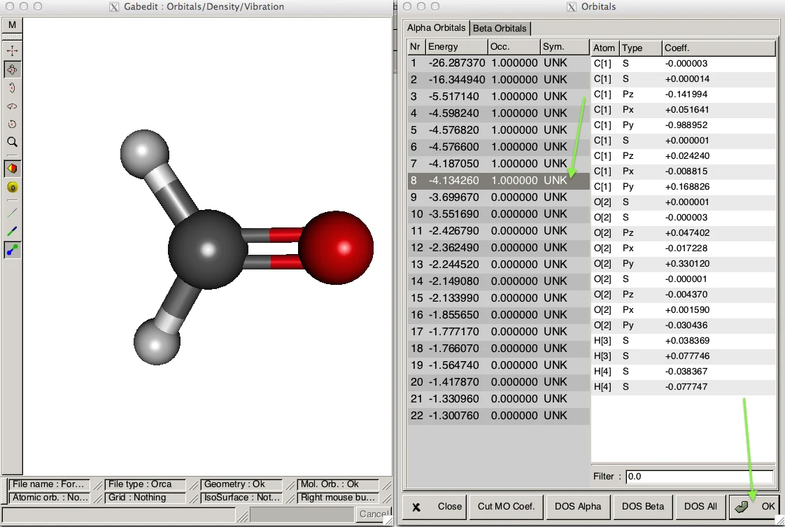
Na janela seguinte, mantenha os valores padrão e clique em OK. Na próxima, ajuste o isovalue para 0,05 e clique em OK.
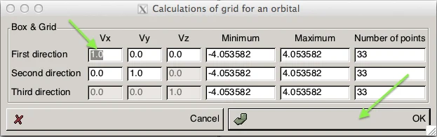
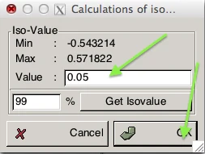
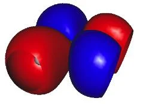
Note que o orbital aparece cortado: é preciso aumentar a região do gráfico. Vá em M > Orbitals > Selection, selecione o HOMO novamente e clique em OK. Mude o valor Minimum da linha First direction para −6; os outros valores são atualizados. Repita os passos e você terá o orbital completo. Para deixar a superfície transparente: M > Render > Surface > Transparency.
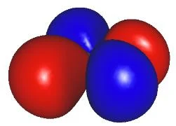
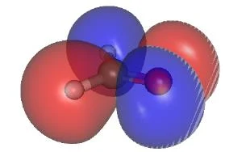
O HOMO-1 corresponde à ligação π. Ele e o LUMO estão abaixo:
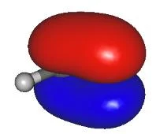
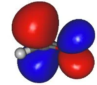
Outras funções importantes
- Vetor do dipolo: M > Render > Show dipole.
- Numeração dos átomos: M > Render > Label > Show numbers. Os números seguem a ordem dos átomos nas coordenadas cartesianas, o que ajuda a associar as cargas calculadas a cada átomo.
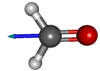
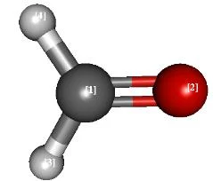
Mapa de potencial eletrostático
A forma de uma molécula é determinada pela sua densidade eletrônica. Mapas de potencial eletrostático mostram regiões de densidade positiva e negativa e ajudam a entender propriedades físicas e químicas, como reatividade, polaridade e interações entre proteínas e ligantes.
- Clique em Orbitals > Read geometry and orbitals from a ORCA output file, abra o
.oute clique em Close na janela de orbitais. - Leia a densidade eletrônica: M > Density > Electronic. Siga os mesmos passos dos orbitais: mude o Minimum da First direction para −6, clique em OK e ajuste o isovalue para 0,05. A densidade ainda aparece sem cores.
- Associe a densidade às cargas: M > MEP > Mapped the current grid > MEP using partial charges. Ajuste o isovalue para 0,05 e clique em OK. Na escala de cores, digite −0.18 no lado vermelho (negativo) e 0.18 no lado azul (positivo), com Enter.
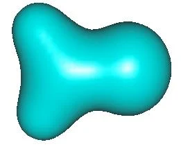
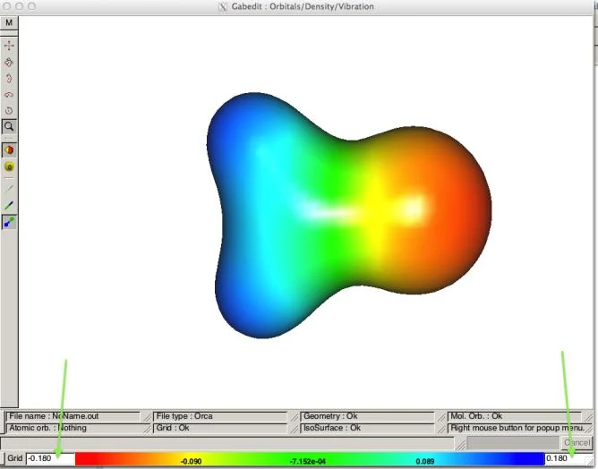